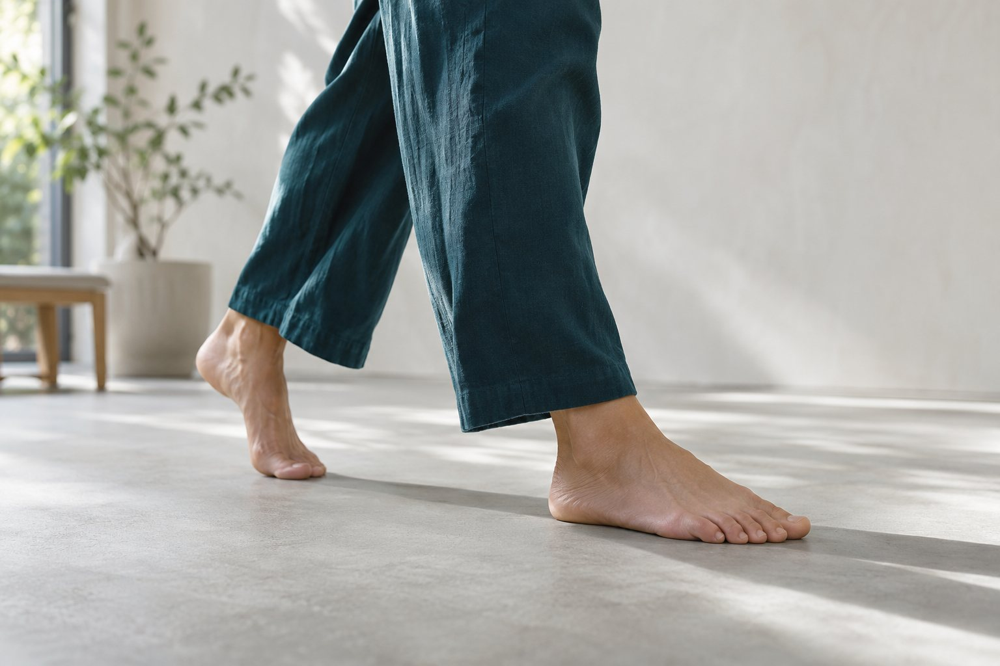
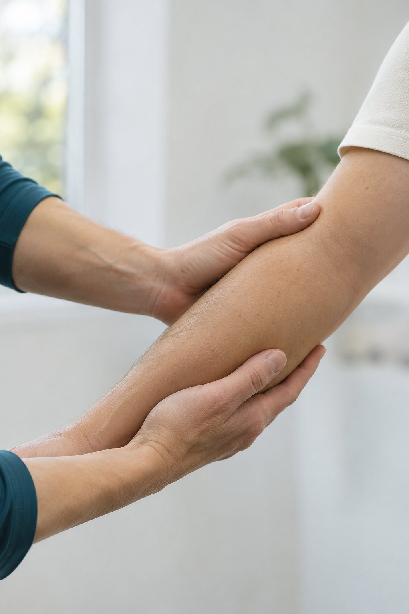

Fisioterapia en Ubrique
Movimiento.en primer plano.
01 / La clínica
Fisioterapia.
Con el movimiento
como punto de partida.
Avancli es una clínica de fisioterapia y osteopatía situada en Ubrique, en la Sierra de Cádiz.
Para conocer la atención disponible y concertar una cita, puedes contactar directamente con el centro.
Conocer la web oficial02 / Movimiento en foco
Cada gesto cuenta.

Áreas de atención
La web oficial del centro recoge estas áreas profesionales.
- 01
Fisioterapia
avanzada - 02
Osteopatía
- 03
Rehabilitación
Consulta con la clínica qué atención ofrece para tu situación y la disponibilidad de citas.
Ampliar información profesional03 / Contacto directo